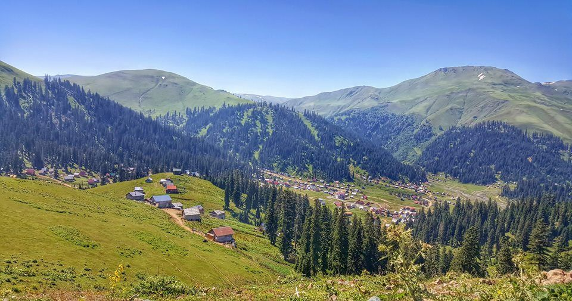
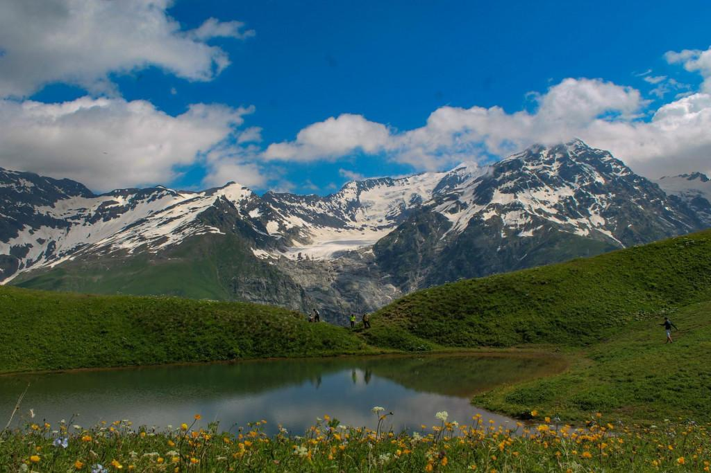
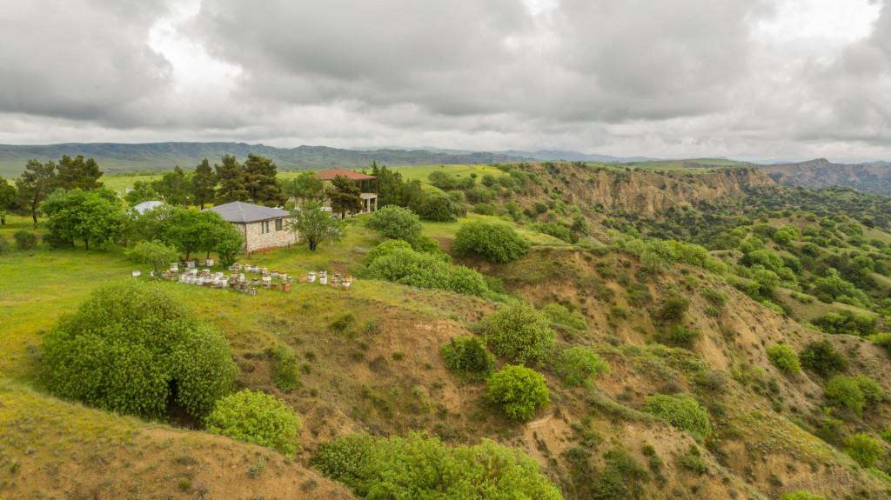
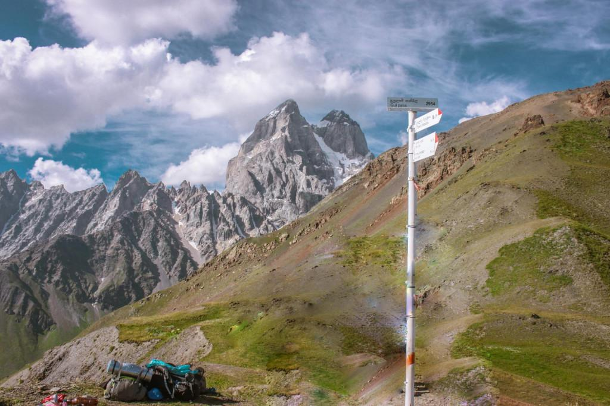

ნინოსხევის ჩანჩქერი
გურგენიანის ჩანჩქერი მდებარეობს კახეთში, სოფელი გურგენიანიდან 8 კმ -ს დაშორებით, მდინარე ნინოსხევზე.
მარტოტის ტბა
მარტოტის ტბა - მდებარეობს კახეთში, კერძოდ ლაგოდეხის მუნიციპალიტეტში, კავკასიონის ქედზე, ზღვის დონიდან 2830 მეტრზე, საქართველო-რუსეთის სასაზღვრო ზოლთან ახლოს.

გომისმთა
მარშრუტი იწყება კურორტ გომისმთიდან და გადადის კურორტ ბახმაროში. კურორტი გომისმთა მდებარეობს ზღვის დონიდან 2100-2755 მეტრზე, ბახმარო 1950-2050 მეტრზე.
ლომისმთა
ლომისმთის ბილიკზე თქვენ შეგხვდებათ შერეული ტყეები, ლომისმთის მწვერვალი, ალპური მდელო და წმ. გიორგის სალოცავი.

სასვანოს ტბა
სასვანოს ტბა მდებარეობს სამეგრელო ზემო სვანეთში მდინარე რიონის ხეობაში ზღვის დონიდან 2680 მეტრზე.
არწივის ხეობა
არწივის ხეობა – ბუნების ძეგლი საქართველოში, მდებარეობს დედოფლისწყაროს მუნიციპალიტეტში, შედის ვაშლოვანის დაცული ტერიტორიების შემადგენლობაში.
მიჯნისყურე
მიჯნისყურე - საბანაკე ადგილი ვაშლოვანის ნაკრძალში, ალაზნის ჭალის საქართველოს უკიდურესი სამხრეთ ნაწილი, სასაზღვრო ზონა.
კაკლისყურე
კაკლის ყურე წარმოადგენს ნახევარკუნძულის ფორმის მქონე მდინარე ალაზანში შეჭრილ ყურეს სადაც შემორჩენილია კაკლის ბუნებრივი ვრცელი ჰაბიტატი.

პანტიშარა
პანტიშარას ხეობა - ხეობისკენ მიმავალი გზა ერთმანეთისგან მკვეთრად განსხვავებულ ორი ლანდშაფტის მიჯნას წარმოადგენს.
თეთნულდი
თეთნულდი — მწვერვალი საქართველოში, სამეგრელო-ზემო სვანეთის მხარეში, მესტიის მუნიციპალიტეტში.
უშბის ჩანჩქერი და მყინვარი
უშბის ჩანჩქერი(შდუგრა) საქართველოში ყველაზე წყალუხვი ჩანჩქერია. მდებარეობს სვანეთში, სოფელ მაზერთან.

მაზერი
მაზერი — სოფელი საქართველოში, სამეგრელო-ზემო სვანეთის მხარის მესტიის მუნიციპალიტეტში.